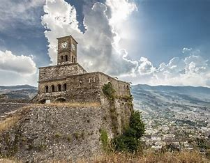
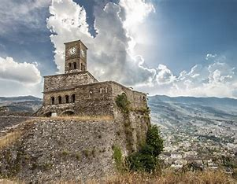

About Gjirokastër Castle
Gjirokastër Castle is a fortress in Gjirokastër, Albania, with a history dating back to the 12th century. It is one of the largest castles in the Balkans and offers stunning views of the city and the Drino valley.
History
The castle has been used as a military fortress, a prison, and now serves as a museum displaying weapons and historical artifacts from different eras. It played an important role in the history of Albania and is a symbol of resilience and cultural heritage. The castle has been expanded and modified over the centuries, with contributions from various ruling powers, including the Ottoman Empire.
Attractions
- National Armament Museum - Showcases weapons from different time periods.
- Castle Prison - Used during the communist era for political prisoners.
- World War II American Plane - A mysterious relic with debated origins.
- Beautiful panoramic views of Gjirokastër and the surrounding mountains.
- Annual Gjirokastër National Folklore Festival, a major cultural event.
- Clock Tower - One of the most iconic structures inside the castle.
- Underground Water Reservoirs - Historically used to store water during sieges.
Interesting Facts
The castle is known for its eerie tunnels and underground passages, adding to its mysterious charm. It also houses a clock tower that has withstood the test of time, offering a glimpse into the architectural heritage of the region.
Legends say that the castle was once the site of secret meetings and military strategies planned in hidden rooms. The castle has survived numerous invasions, making it a key historical site in Albania.
Visitor Information
The castle is open to visitors year-round, with guided tours available for those interested in its rich history. It is recommended to visit during sunset to enjoy the breathtaking views over Gjirokastër.